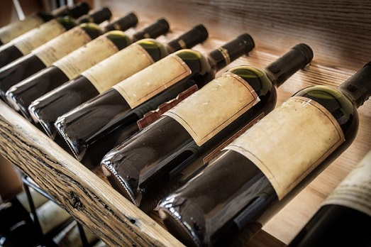

MARIDAJE
El maridaje entre el vino y la comida es el proceso de unir un alimento con un vino con la intención de realzar el placer de comerlos.
| Sauvignon Blanc | Chardonnay | Torrontés | Pinot Noir | Malbec | Merlot | Cabernet Sauvignon | |
|---|---|---|---|---|---|---|---|
| Queso / Nueces | Queso de cabra | Queso asiago, Almendras | Queso de cabra, Mozarela, Nueces tostadas | Queso de cabra, Queso Brie, Nuez | Queso asagio, Gouda | Parmesano, Castañas | Cheddar, Nuez |
| Carne / Aves | Pollo, Pavo | Terneta, Pollo, Lomo de cerdo | Carne ahumada, Pollo grillado, Chorizo | Cordero, Ternera, Pollo rostizado | Hamburguesa, Pato, Costillas de cerdo | Carne grillada de res | Venado, Lomo, Estofado |
| Comida del Mar | Lenguado, Ostras, Vieiras | Mero, Camarón, Cangrejo | Sushi, Lubina, Dorado grillado | Pez reloj, Atún | Mero grillado, Pez espada | Pez espada grillado, Atún | Atún grillado |
| Vegetales / Frutas | Citricos, Manzana verde, Espárragos | Papas, Manzanas, Calabacin | Mango, Piña, Ensalada verde | Hongos, Frutos secos, Higos | Espinaca, Papa asada, arándanos | Cebolla caramelizada, Ciruela | Cerezas negras, Brocoli, Tomate |
| Hierbas / Especias | Cebollín, Estragón, Cilantro | Romero, Jengibre | Orégano, Albahaca, Ajo | Nuez moscada, Canela, Clavo | Romero, Pimienta negra | Menta, Romero, Enebro | Romero, Enebro, Lavanda |
| Salsas | Citricas, Suaves | Dulces, Picante, Barbacue | Blanca, Asiática, Mani | Hongos, Ligera a media, Roja | Barbecue, Mole negro | Boloñesa | Espesas, Tomate |
| Postres | Pie de limón | Budín de banana, Budín de vainilla | Torta de queso, Tiramisu | Creme Brulee, Chocolate blanco | Budín de banana, Chocolate, Dulce de leche | Chocolate negro, Bayas, Fondue | Chocolate, Café expreso, Helado |
SERVICIO
TEMPERATURA
La temperatura influye considerablemente en el sabor, aroma y matices.
Para los tintos, se tiene en cuenta la crianza. En tintos jóvenes lo idóneo es que ronden entre 13 y 15 grados. En crianzas, entre 16 y 18 grados. Para reservas, grandes reservas y vinos de autor, a partir de 19 grados. Los rosados deben servirse bien fríos (6 grados aproximadamente). Esto también es aplicable a los blancos jóvenes. Por su parte, los blancos con crianza necesitan temperaturas un poco más altas (unos 10 grados).
DESCORCHE
¿Qué es el descorche? El descorche es el acto de abrir una botella de vino, una auténtica ceremonia para los aficionados a esta bebida. En el mundo de la gastronomía, también se llama descorche al servicio pago de abrir una botella de vino llevada por el comensal que ofrecen algunos restaurantes. Sin embargo, se recomienda siempre llamar por teléfono antes de ir al restaurante para preguntar tanto si hacen descorche como el precio del mismo, ya que esta opción no siempre es conveniente para el consumidor.
¿Cómo se debe descorchar una botella de vino? El primer paso para descorchar una botella es colocarla en posición vertical y cortar la cápsula que envuelve al cuello de la botella y al corcho. Este corte se realiza por debajo del gollete de la botella, manteniéndola quieta y moviendo el objeto que se utilice para cortar la cápsula que puede ser un sacacorchos, un cuchillo pequeño o bien un auténtico cortacápsulas. El segundo paso consiste en dejar el corcho completamente limpio –sin restos de la cápsula- y proceder a quitarlo con un sacacorchos. Si al extraer el tapón el cuello de la botella presenta restos o impurezas es necesario quitarlos con un paño limpio para disfrutar del vino correctamente. Por último, se debe observar atentamente el corcho para ver si tiene filtraciones y si se encuentra en buena forma (sin manchas o rastros de humedad). Un corcho en buen estado es garantía de un vino en óptimas condiciones de conservación.
¿Varía el descorche y servicio según el vino? El descorche y el servicio de vinos varían de acuerdo al tipo o estilo de vino que se va a beber: Los vinos tintos jóvenes se descorchan y se sirven al momento de beberlos siguiendo con el protocolo detallado anteriormente. Los vinos blancos o rosados que se beben a menor temperatura se presentan en una frapera con agua y hielo para mantener su correcta temperatura a lo largo de la comida.
GUARDA
Uno de los mayores problemas de todos aquellos a los que nos gusta el vino, es como conservar el vino en casa, para que no pierda sus propiedades y su calidad. Es por esa razón que desde Tour y Vino os quiero dar unos consejos que os ayuden con la conservación del vino en vuestras casas. En primer lugar, os voy a detallar las condiciones básicas que es necesario cumplir, para una correcta conservación del vino, independientemente del lugar donde se guarde el vino.
Las botellas en horizontal. Parece ser que hay investigaciones al respecto que contradicen esa teoría. Según unas investigaciones llevadas a cabo por la mayor corchera del mundo (Amorim), parece ser que en el espacio que hay entre el vino y el corcho, la humedad alcanza casi el 100%. Por lo que es una humedad más que suficiente para la conservación del corcho. Aseguran además que el mantener el vino en contacto con el corcho, podría acelerar el deterioro del tapón.
Ahora vamos a la práctica. ¿Cuanto tiempo como máximo ha pasado una botella de vino en tu casa sin que la abrieras? La respuesta en la mayoría de los casos no supera un año. Entonces, ¿como pongo las botellas? Para estos casos, y teniendo en cuenta las investigaciones, pues da igual en que posición las coloques, porque estas investigaciones están hechas para la conservación del vino durante varios años, 5, 10 o más.